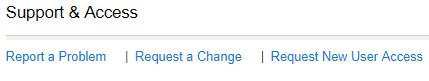
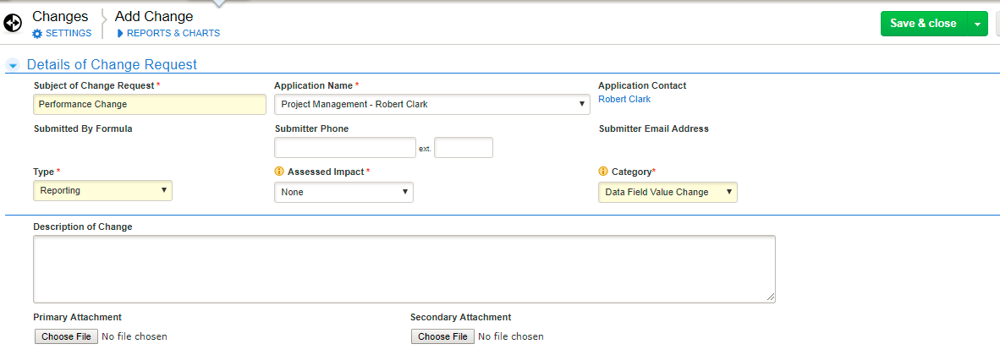

Exemptions
The PD must communicate their exemption request(s) to their RD and follow this process:
Exceptions may be granted by the respective VP. In order to be granted an exception, the RD must communicate the reasoning behind the exception in writing to the VP for consideration. If approved, documentation of the exception should be maintained locally and be made accessible to external reviewers during quality reviews.
If granted an exemption, follow the following steps:
Select "Request a Change"

Document Change

Created with the Personal Edition of HelpNDoc: Easily create CHM Help documents